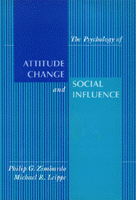

<body bgcolor="#FFFFFF" text="#000000" link="#0000FF" vlink="#CC0000" alink="#CC0000"><center><hr width="350" size="1" align="center" noshade>Theory about the psychology of attitudes, persuasion, and social influence<hr width="350" size="1" align="center" noshade><p><a href="https://cdcshoppingcart.uchicago.edu/Cart/ChicagoBook.aspx?ISBN=9780877228523&&PRESS=temple" target="_top">Buy this book!</a> | <a href="https://cdcshoppingcart.uchicago.edu/Cart/Cart.aspx?PRESS=temple" target="_top">View Cart</a> | <a href="https://cdcshoppingcart.uchicago.edu/Cart/Cart.aspx?PRESS=temple" target="_top">Check Out</a></p><p></p></center><!--none//--><h1>Psychology of Attitude Change and Social Influence</h1>
<h3>Philip G. Zimbardo and Michael R. Leippe</h3>
<P>cloth 0-87722-852-3 $54.95, Jun 91, <FONT COLOR=#990033>Out of Print</FONT>
<BR> 400 pp
</P><p>Social influence is at the heart of many pressing societal issues-promotion of healthful lifestyles, the raising of environmental consciousness, the effects of censorship, "image-processing" in politics, and ultrasophisticated advertising and marketing. With lively examples from current events and popular culture, this book pulls together a wide range of research and theory about the psychology of attitudes, persuasion, and social influence.
<p>Philip Zimbardo and Michael R. Leippe cover all the major topics in this area. To integrate the vast amount of material they use the recurring theme of "attitude systems," in which attitudes, cognitions, behaviors, and intentions can be affected by external agents of influence as well as influenced internally by each other.
<p>Stressing the personal and cultural relevance of social influence principles, Zimbardo and Leippe use social and geopolitical events and issues to illustrate the concepts and offer stories and anecdotes as examples of how these principles work in day-to-day situations. In addition, two applications chapters focus on influence in the legal system and on improving the quality of life (the environment, personal health, and mental well-being).
<BR>&nbsp;<h2>Contents</h2><P>
<p>Foreword
<br>Preface
<p>1. A World of Influence
<br><I>Social Influence Processes and Settings &#149
Tales from the Influence Hall of Fame (and Shame) &#149
ABCs of Influence: Attitudes, Behavior, and Cognitions &#149
A Social Psychological Perspective &#149
A Look Ahead</I>
<p>2. Influencing Behavior: Taking Direct Approaches
<br><I>Learning When Actions Pay Off &#149
Approval and Disapproval: The Power of Social Rewards &#149
Conformity: Saving Face and Gaining Grace&#151and Knowledge &#149
Obedience: Basing Behavior on Authority &#149
Kneejerk Psychology: Influence through Heuristics &#149
Point of Departure: When Inner Changes Flow from External Influence</I>
<p>3. Influencing Attitudes Through Behavior: When Doing Becomes Believing
<br><I>Attribution and Self-Attribution &#149
Self-Persuasion and Role-Playing &#149
The Psychology of Self-Justification: Dissonance Theory &#149
Dissonance, Self-Attribution, and Self-Affirmation: Similarities and Separate Identities &#149
A Concluding Note</I>
<p>4. Changing Attitudes Through Persuasion: Take My Words for It
<br><I>Seeking Out Influence: Social Comparison Processes &#149
Being Sought as a Target: Persuasive Appeals &#149
Presentation and Exposure &#149
Attention &#149
Comprehension &#149
Acceptance: The Biggest Hurdle &#149
An Interim Stop on the Road to Lasting Persuasion</I>
<p>5. Making Persuasion Last: The Persistence and Behavioral Consequences of Attitude Change
<br><I>Sowing the Seeds of Retention: Creating Strong, Clear, and Extreme Attitudes &#149
Retention: Persuasion over Time &#149
Translating Attitudes into Behavior: Ultimate Persuasion &#149
The Hard-Earned Rewards of Persuasion</I>
<p>6. Resisting and Embracing Influence: The Yin and Yang of Persuasion
<br><I>The Stubborn Mind: Resisting and Selective Bending &#149
Overcoming Resistance: Liberating the Totalitarian Ego &#149
The Other Extreme: Persuasion Pushovers &#149
Prejudice: An Attitude That Can Kill &#149
A Final Note: On Having an Open Mind without Being a Pushover</I>
<p>7. Influence, Awareness, and the Unconscious: When What You Don't Know May Change You
<br><I>Awareness and Consciousness of Influence &#149
Nonverbal (and Not Necessarily Conscious) Messages &#149
Subliminals: Inconspicuous Influence &#149
Awareness and Consciousness: A Closing Perspective</I>
<p>8. Influence and the Legal System: Trying Experiences
<br><I>The Adversarial Approach: Does Competitive Persuasion Yield Justice? &#149
The Police Station: Gathering Evidence from People &#149
In the Courtroom: The Persuasion Battleground &#149
The Jury Room &#149
The Case of Psychology and Law: A Closing Statement</I>
<p>9. Social Influence in the Service of Health and Happiness
<br><I>Pro-Environmental Influence: Can Persuasion Preserve the Planet? &#149
The Promotion of Health &#149
Social Psychological Roads to Mental Health &#149
Social Influence, the Good Life, and Your Future</I>
<p>Appendix A: Research and the Experimental Method
<br>Appendix B: Measuring Attitudes and Their Components
<br>References
<br>Name Index
<br>Subject Index
</P><BR>&nbsp;<H2>About the Author(s)</H2>
<P><b>Philip G. Zimbardo</b>, Professor of Social Psychology at Stanford University, created and hosted the PBS-TV series <I>Discovering Psychology</I> (1990).</P>
<P><b>Michael R. Leippe</b> is Professor of Psychology at Adelphi University.</P>
<BR><H2>Subject Categories</H2>
<p><A HREF="/tempress/psycho.html" TARGET="_top">Psychology</a>
</p>
<p align="center"><a href="https://cdcshoppingcart.uchicago.edu/Cart/ChicagoBook.aspx?ISBN=9780877228523&&PRESS=temple" target="_top">Buy this book!</a> | <a href="https://cdcshoppingcart.uchicago.edu/Cart/Cart.aspx?PRESS=temple" target="_top">View Cart</a> | <a href="https://cdcshoppingcart.uchicago.edu/Cart/Cart.aspx?PRESS=temple" target="_top">Check Out</a></p><p><font face="Arial" size="1"><a href="copyright.html" onMouseOver="window.status='Web Copyright Policy';return true;" onMouseOut="window.status=''" title="Web Copyright Policy">&copy;</a> 2015 <a href="http://www.temple.edu" target="new" onMouseOver="window.status='Link to Temple University home page';return true;" onMouseOut="window.status=''" title="Link to Temple University home page">Temple University</a>. All Rights Reserved. http://www.temple.edu/tempress/titles/881_reg.html</font></p>